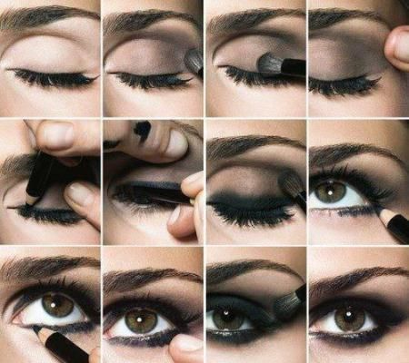

¡Hola amantes del maquillaje! 💄
Lograr un smokey eyes puede transformar por completo tu mirada, agregando un toque de misterio y seducción. ¡Descubre cómo crear este look impactante y cautivador! 👁️🔥
Paso 1: Prepara tus Párpados 🌟
Comienza aplicando un primer de ojos para asegurar que tus sombras se adhieran perfectamente y permanezcan intactas por más tiempo. Esto también ayuda a intensificar los colores. 🎨
Paso 2: Sombras Oscuras en Acción ⚫
Selecciona tus sombras oscuras favoritas, como el negro, gris o marrón oscuro. Aplica la sombra en el párpado móvil, concentrándote en la esquina externa y difuminando hacia el pliegue. 💫
Paso 3: Difumina para un Acabado Ahumado 🖌️
El secreto de un smokey eyes perfecto es el difuminado. Usa una brocha suave para mezclar las sombras y lograr una transición suave entre los colores. Esto dará un efecto ahumado y profesional. 🌌
Paso 4: Delineado Intenso ✒️
Acentúa tus ojos con un delineado intenso. Puedes optar por un delineador líquido para un look más definido o un lápiz para un acabado más suave. Define la línea de las pestañas y la línea de agua. 👀
Paso 5: Pestañas Voluminosas 🚀
No olvides tus pestañas. Aplica varias capas de máscara para pestañas para lograr un efecto voluminoso y dramático. Unas pestañas impactantes completarán tu smokey eyes. 🌟
Paso 6: Labios Sutiles 💋
Para equilibrar el look, elige tonos sutiles para los labios. Un nude o un tono natural permitirán que tus ojos ahumados sean el centro de atención. ¡Listo para cautivar! 💄
¡Y ahí lo tienes, chicas! Ahora sabes cómo lograr un smokey eyes impactante y seductor. ¡Deja que tu mirada hable por sí misma en cualquier ocasión! 🔥